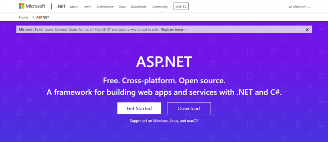

Practica: ASP.NET Core
Definición
ASP.NET Core es un framework abierto y para todas las plataformas pensado para desarrollo web. Se diseñó para proporcionar un framework de desarrollo optimizado para las aplicaciones que se implementan tanto en la nube como en servidores dedicados en las instalaciones del cliente.
Como surgió
ASP.NET Core es un rediseño completo de ASP.NET, pensada y diseñada para ser más ligera que su antecesor.
¿Qué debo saber?
Para comenzar a trabajar en ASP.NET, debes tener conocimientos sobre C#, y aunque no es completamente necesario, sí es recomendable manejar el lenguaje de acceso a datos SQL. También se insta al lector a conocer, al menos, las bases de HTML, CSS y JavaScript.